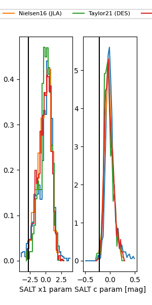

FINK: ZTF25abmycdf
Lasair: ZTF25abmycdf
ALeRCE: ZTF25abmycdf
TNS: 2025wvq
YSE: 2025wvq
ZTF25abmycdf (ztf,fink)
2025wvq (tns,yse)
ATLAS25kzj (atlas)
equatorial (ra, dec) = (83.9590,+52.15162)
galactic (l, b) = (159.1232,+10.55475)


last atlasc=18.99, atlaso=19.10, ztfg=19.83, ztfr=19.28
1 atlasc, 7 atlaso, 5 ztfg, 5 ztfr detections